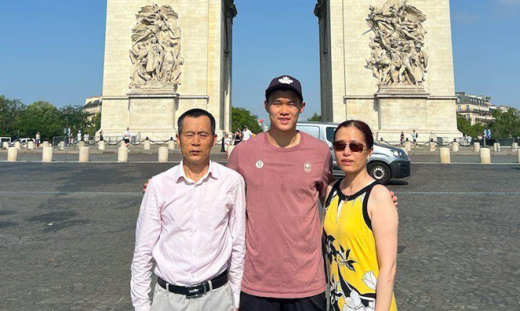
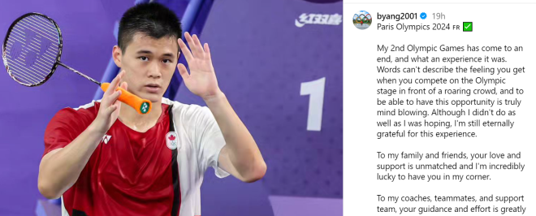
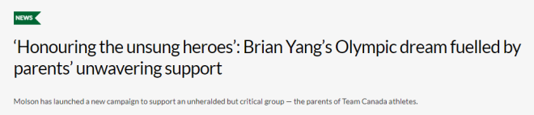

本届巴黎奥运会上，来自列治文山的杨灿（Brian Yang）再次代表加拿大队出战。

据yorkregion.com报道，杨灿从一名年轻的羽毛球神童成长为加拿大顶级运动员之一，不仅证明了他的天赋，也离不开父母亲Michael Yang和Nancy Tan的不懈支持。
杨灿住在列治文山，八岁时开始在万锦进行羽毛球训练。随后他迅速晋级，14 岁时就创造了历史，于2016年赢得了U19单打冠军，成为加拿大最年轻的青少年冠军。
仅仅几年后，2019 年，他在17岁时便夺得男子单打冠军，成为最年轻的加拿大全国冠军。杨灿的奉献和努力最终让他于2020年东京奥运会上首次亮相，代表加拿大登上了世界最大的舞台。

每一位伟大运动员的背后都有无名英雄——父母牺牲时间、精力和资源来支持孩子的成功。
回顾他们一路走来所面临的挑战，杨灿的父母分享道，“我们面临的最大挑战是时间管理。每天，我们都为他的学习、训练和休息做好准备，这样才能保证他的学业，在比赛中取得好成绩，同时身体也得到很好的保养。”
他们对儿子职业生涯的承诺伴随着许多牺牲。从清晨的训练，到长时间站在看台上陪同，再到前往世界各地参加比赛的高昂费用，培养一名世界级运动员绝非易事。
杨灿小的时候，Nancy和Michael轮流陪伴他，确保他在国际比赛中不会孤单一人。

根据加拿大体育科学局的数据，天才运动员至少需要10年和10,000小时的训练才能达到最高水平的比赛——每天大约需要三个小时的训练或比赛。在这些训练过程中，父母们都在场，为孩子加油，支持他们的每一步。
意识到这一点，加拿大队的合作伙伴Molson发起了2024年巴黎奥运会“赞助父母”活动，重点关注这些父母的关键作用。
这项前所未有的举措为他们提供了通常只为职业运动员保留的福利，包括带薪合同、在广告中担任主角以及在 Molson社交媒体渠道上亮相。
“我们很自豪能够支持加拿大队运动员——他们的父母——参加巴黎奥运会，” Molson & Economy Brands 营销总监Kara Fitzpatrick 说道。“我们希望做一些有意义的事情来支持那些在幕后付出巨大努力的运动员家人，他们提供无尽的支持和精力，帮助他们的孩子登上体育界最大的舞台。”
Nancy和Michael是被选中获得这项独特赞助的九名加拿大队父母之一。
“我们非常荣幸和高兴能与Molson签署这份代言协议，”他们说。“言语无法表达我们的感激之情。”
作为一位曾陪杨灿到世界参加比赛的父母，Nancy和Michael认为，与其他国家相比，加拿大羽毛球运动员往往得不到认可。与Molson的此次代言协议为他们带来了他们一直希望得到的认可，并希望这将为加拿大羽毛球运动的发展带来更多社会关注和支持。